1. No cubo inicial, em Edit Mode, clique W e escolha Subdivide Smooth. No exemplo abaixo, utilizámos a barra de ferramentas para definir Number of Cuts = 3.
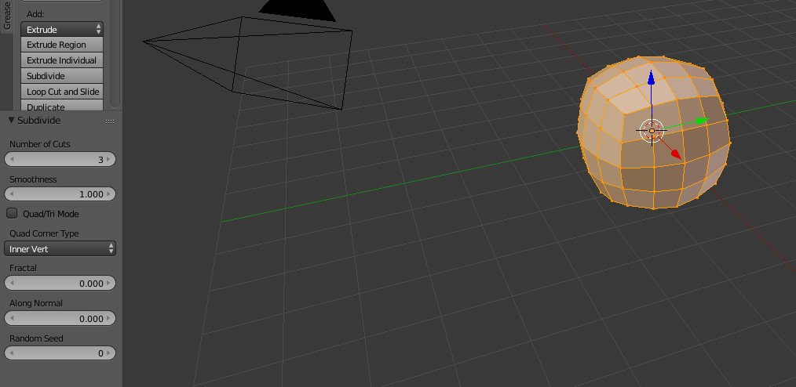2. Aplicámos um Smoth Shading ao objeto e um Subdivision Surface.
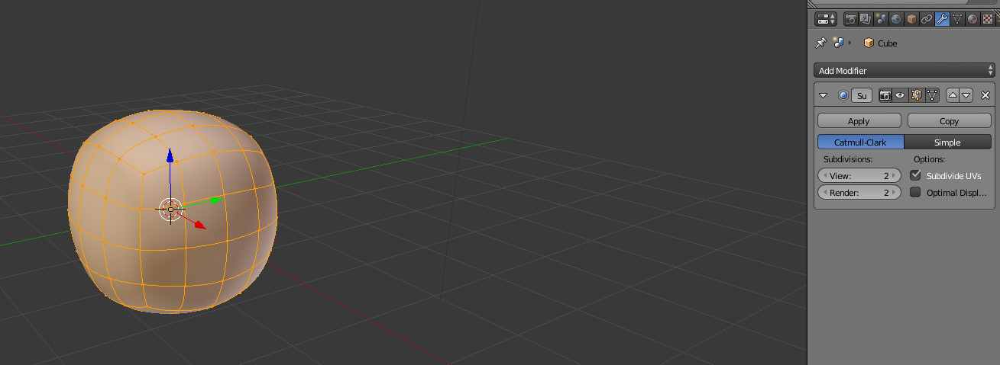3. Com a ferramenta de Proportional Edit, alisámos a área da face da "cabeça".
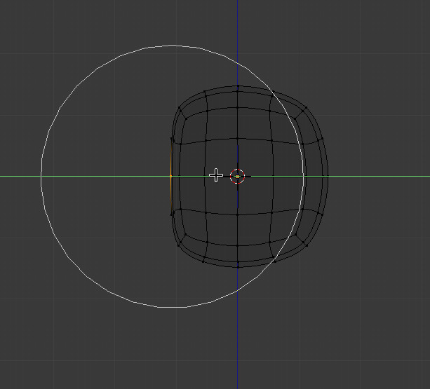4. Em Edit Mode, foram selecionadas as faces do topo da cabeça (onde vão nascer os cabelos) e criado um Vertex Group. Para associar os vértices selecionados ao Vertex Group, tem de ter um Vertex Group selecionado e pressionar o botão Assign.
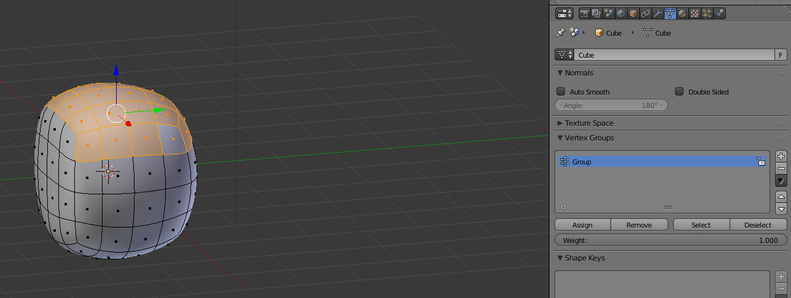5. Este é o aspeto inicial quando criarmos o sistema de partículas de tipo Hair.
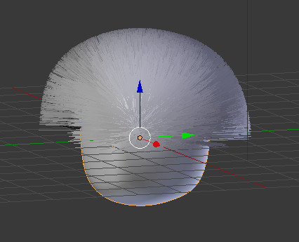6. Atente nas seguintes configurações:
Nas configurações iniciais, o Type é Hair.
No painel Render, o material para as partículas chama-se "pelo" (o objeto tem dois materiais criados, o segundo chama-se "pelo").
No painel Vertex Group, a Density das partículas está associada a um Vertex Group com o nome Group (foi criado no passo 4).
Embora não seja visível na imagem abaixo (painel está fechado), no painel Children (partículas-filhas) escolhemos Interpolated.
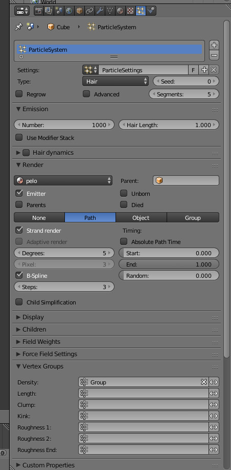Outras opções básicas úteis:
Emission: Number (número de fios de cabelo) e Hair Length (comprimento dos fios).
Render: Path (cabelo é como um path, um fio), Object (permite escolher um objeto), Group (permite escolher um Group).
Display: Rendered (cabelo como curvas), Path (só pontos onde os fios terminam).
Children: permite criar partículas-filhas (preferível a aumentar número de fios no Emission). Display (partículas-filhas exibidas no 3D View), Rendered (partículas-filhas renderizadas).
7. Neste exercícios, estamos a usar o Hair com o renderizador Cycles. O painel abaixo só existe quando utiliza o Cycles.
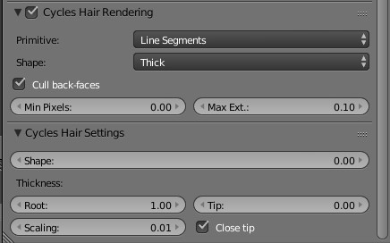As opções Primitive (Curve Segments, Line Segments e Triangles) e Shape (Thick ou Ribbon) permitem configurar o modo como os fios de cabelo são criados, o que tem impacto no aspeto e na rapidez/desempenho.
Primitive pode ser Curve Segments (utiliza uma curva para desenhar o fio de cabelo; Curve Subdivisions permite definir número de subdivisões), Line Segments (utiliza curva para desenhar fio de cabelo. Podem aparecer espaços vazios entre pontos. Permite aspeto próximo do Curve mas mais rápido a renderizar), Triangles (malha triangular),
Shape pode ser Ribbon (aspeto liso/flat) ou Thick (cilindros).
Curve - Thick (com Root 10 e Tip 10) 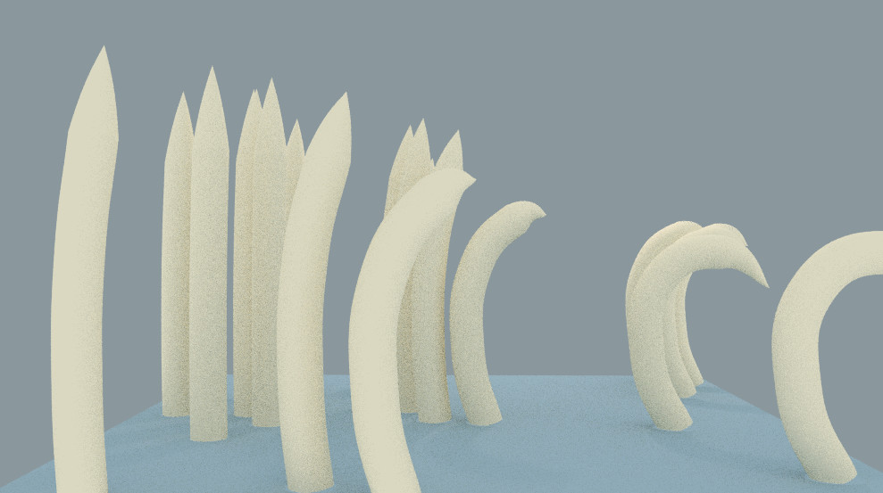
Line - Thick (com Root 10 e Tip 10) 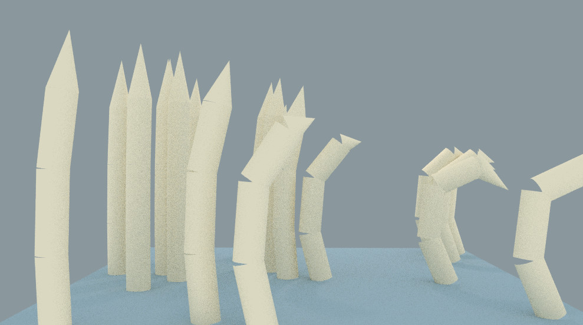
Triangles- Thick (com Root 10 e Tip 10) 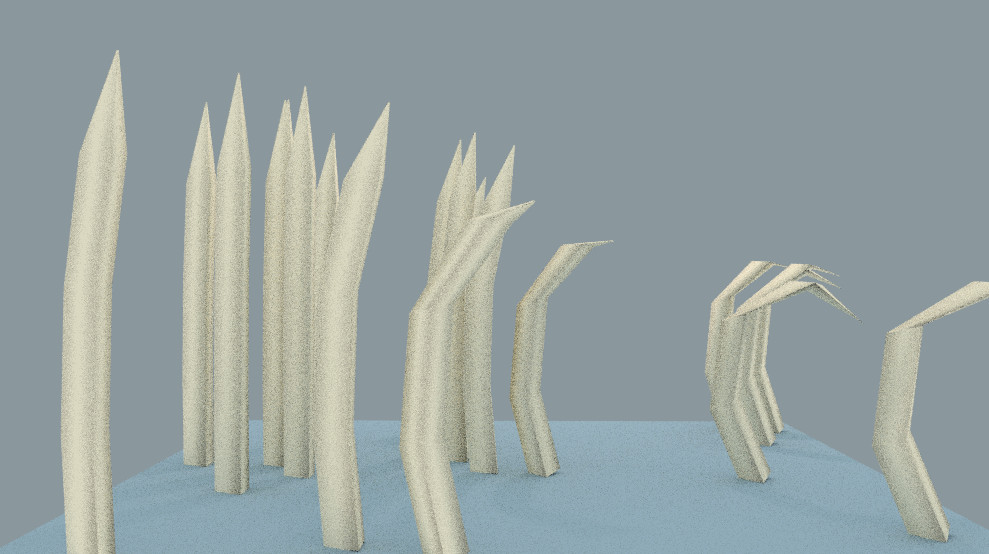
Curve - Ribbon (com Root 10 e Tip 10) 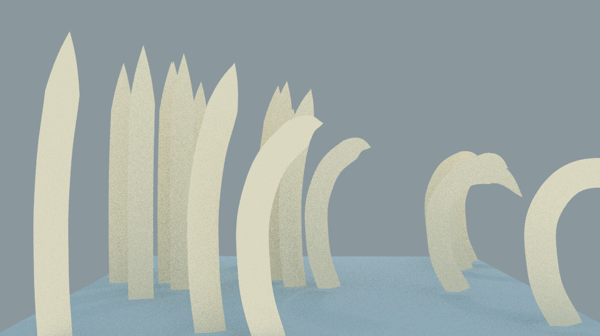
Line - Ribbon (com Root 10 e Tip 10) 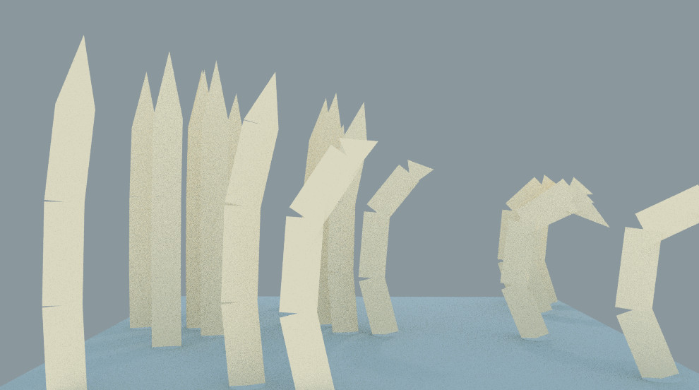
Triangles - Ribbon (com Root 10 e Tip 10) 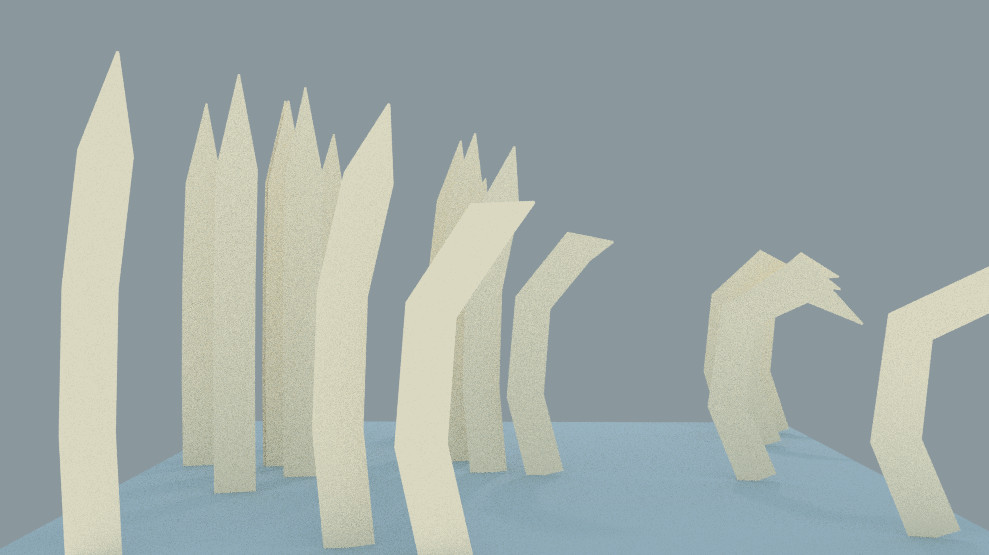
Shape: a rapidez com que o cabelo vai estreitando, a forma da grossura do cabelo (-1 = raiz e ponta têm mesma grossura; 1 = cabelo fica fino muito perto da raiz).
Root/Tip: grossura/largura da raiz e ponta do fio cabelo.
Close Tip: define a ponta como 0. Se não estiver ativado, cabelo não é fechado (similar a um canudo ou uma palhinha de beber).
8. Vamos utilizar o modo Particle Edit para alterar o aspeto do cabelo.
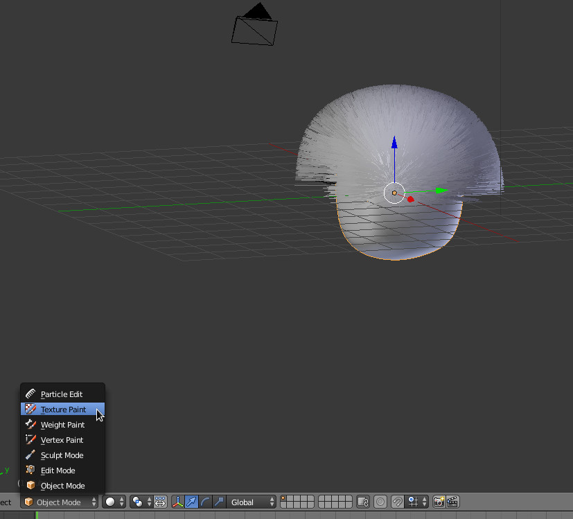9. Na barra de ferramentas encontra várias ferramentas que permitem pentear o cabelo, adicionar/cortar cabelos, aumentar/reduzir comprimento, etc.
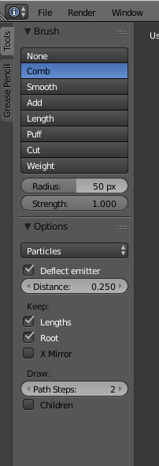10. Depois de usarmos o Comb para pentear...
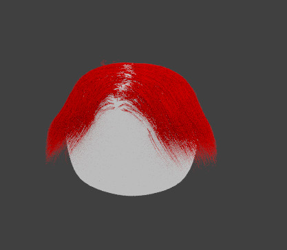11. Depois de usarmos o Add, Length e o Comb...
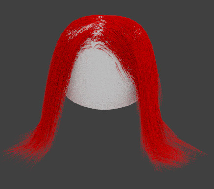12. Com o Puff!
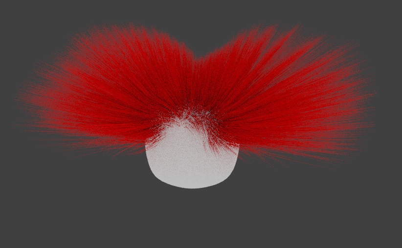